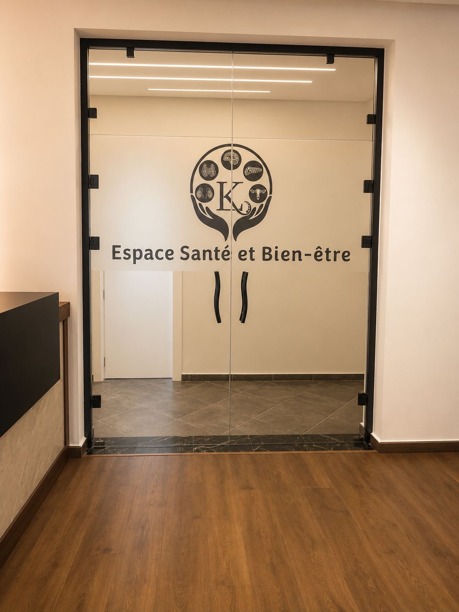
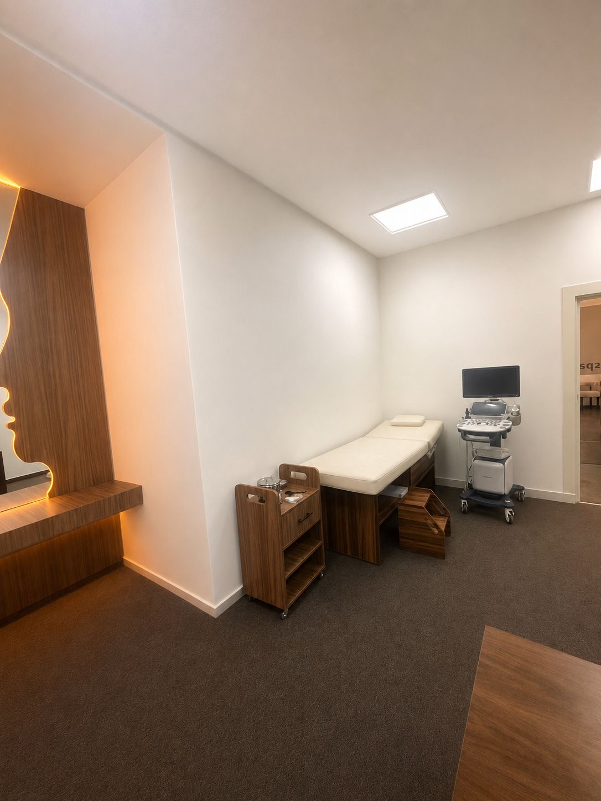
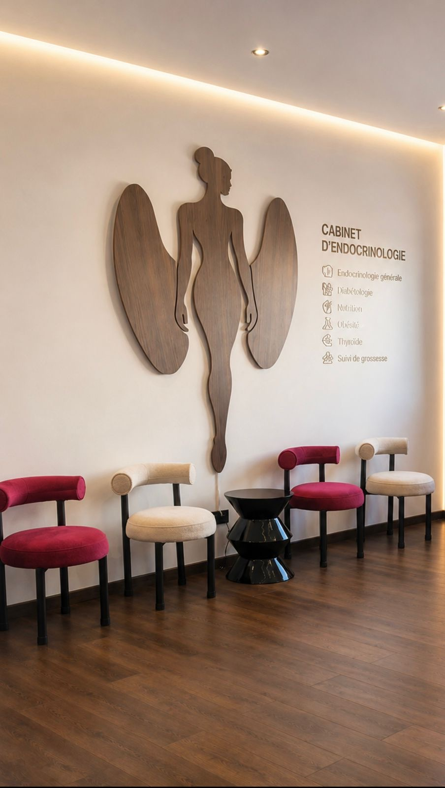

♧
Nutrition
Évaluation avancée de la composition corporelle par impédancemétrie pour une prise en charge nutritionnelle précise et personnalisée.
Bienvenue
L’excellence médicale dans une approche humaine et personnalisée. Une prise en charge globale pour votre santé hormonale, métabolique et nutritionnelle.

Nos spécialités
Évaluation avancée de la composition corporelle par impédancemétrie pour une prise en charge nutritionnelle précise et personnalisée.
Diagnostic et suivi des maladies thyroïdiennes grâce à une expertise spécialisée et une échographie cervicale avancée.
Expertise dans le diagnostic, le suivi et l’équilibre du diabète grâce à une prise en charge globale et individualisée.
Le Cabinet





À propos
Le Dr Lahlou Kenza, spécialiste en endocrinologie, diabétologie et nutrition, vous accueille dans un cabinet moderne dédié à une médecine spécialisée de haute qualité.
Lauréate de la Faculté de Médecine et de Pharmacie de Fès et ancienne médecin au Centre Hospitalier Universitaire Hassan II de Fès, elle bénéficie d’une formation universitaire et hospitalière reconnue.
Grâce à une expertise approfondie en obésité, syndrome métabolique et thyroïdologie clinique et interventionnelle, le Dr Lahlou propose une prise en charge complète, rigoureuse et individualisée des troubles hormonaux et métaboliques.
Chaque consultation est pensée avec attention, discrétion et exigence afin d’offrir une expérience médicale fondée sur la confiance, l’écoute et l’excellence.
Horaires
Contact
Téléphone : 05 32 38 26 66 / 06 20 90 12 00
Email : dr.lahlou.kenza@gmail.com
Adresse : Lot BELAIR, Imm. 5, Bureaux Nadia, 1er étage, Bureau N°2, Bensouda – Fès
Cabinet d’endocrinologie
Le cabinet du Dr Lahlou Kenza vous accueillera bientôt dans un espace moderne et chaleureux dédié à votre bien‑être.
Prendre contact